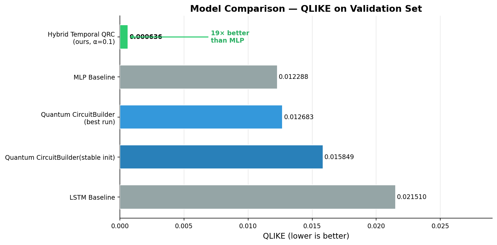
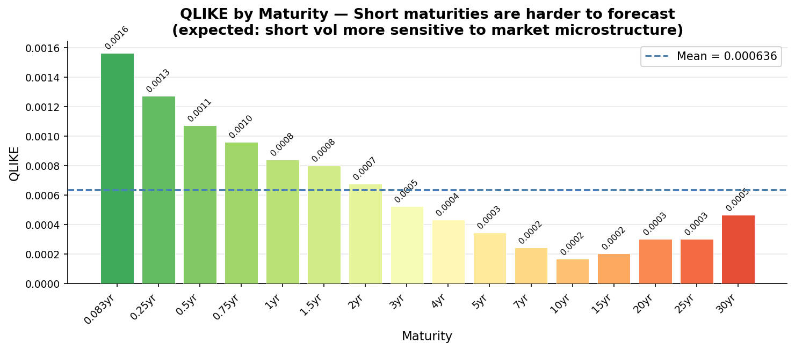
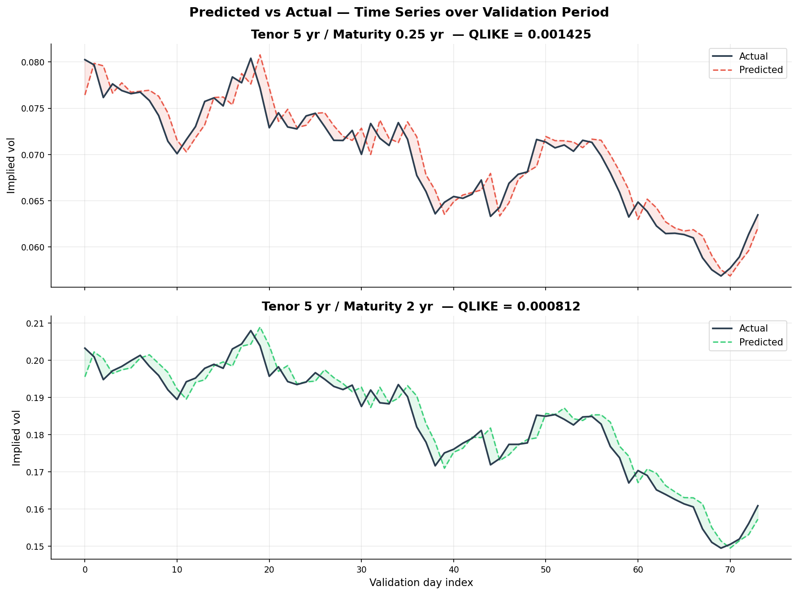

0.000636
Best QLIKE
Quandela Hackathon 2026
Temporal photonic reservoir computing: input/memory mode separation, sequential timestep encoding, and QLIKE-optimized Ridge readout. QLIKE 0.000636 — 19× better than the classical MLP baseline.
0.000636
Best QLIKE
19×
vs MLP Baseline
0.014704
Level 2 RMSE
224
Surface Points
Pipeline
224-vol surface, 5-day lookback window.
MinMax + PCA from 224 to 5 components.
8 modes (5 input + 3 memory), 3 photons, sequential per-timestep encoding.
Single LexGrouping: Fock → 8 features per timestep. 5 days × 8 = 40 quantum + 25 classical PCA = 65 total features.
Ridge regression readout (α = 0.1), analytical solution — no gradient descent, no barren plateaus.
Development Journey
Step 1
MLP (QLIKE 0.012288) and LSTM (0.021510) under identical conditions — same data split, same loss, same seed. LSTM underperforms with only 489 samples. MLP becomes the ceiling to beat.
Step 2
QuantumLayer.simple() with MSE loss: 16 PCA components → 16-mode circuit → LexGrouping → MLP readout. RMSE 0.01959 — competitive with classical, not clearly better.
Step 3
Explicit CircuitBuilder with scale=π angle encoding gives a 2× improvement over the simple API. Switching to QLIKE loss (financially correct for vol) brings the best run to QLIKE 0.012683.
Step 4
The 0.012683 result was a lucky seed — variance ±50% across runs. Identity-block init (Grant et al. 2019) eliminates variance but caps at QLIKE 0.015849. Gradient training on photonic circuits is fundamentally limited at this scale.
Step 5
Adopting Li et al. (arXiv:2505.13933): fixed (non-trained) reservoir, 5 input + 3 memory modes, sequential timestep encoding, Ridge readout. Barren plateaus eliminated by construction.
Step 6
Ablation sweep over α ∈ {0.0001 … 100}. Default α=10 over-regularizes quantum features. α=0.1 balances Fock features against 25 classical PCA features. Final QLIKE 0.000636 — deterministic every run.
Highlights
Loss aligned with volatility forecasting risk profile — penalises underprediction more than overprediction. 19× improvement over the classical MLP baseline (0.000636 vs 0.012288).
Gradient-trained photonic circuits exhibit ±50% run-to-run variance. Identity-block init (Grant et al. 2019) eliminates variance — and the problem exposes why fixed reservoirs outperform gradient-trained circuits at this scale.
Fixed (non-trained) reservoir from Li et al. (arXiv:2505.13933): 5 input + 3 memory modes, sequential timestep encoding, Ridge readout. No gradients, no barren plateaus, deterministic every run.
Results
| Model | RMSE | MAE | QLIKE | Notes |
|---|---|---|---|---|
| 🥇 Hybrid Temporal QRC (ours) | 0.003467 | 0.002591 | 0.000636 | Single circuit + LexGrouping + Ridge α=0.1 |
| MLP Baseline | 0.011867 | 0.008495 | 0.012288 | Fairest classical comparison |
| Quantum CircuitBuilder | 0.014969 | 0.009463 | 0.012683 | Best single run, high variance |
| Quantum CircuitBuilder with Barren Plateau fix | 0.014574 | 0.010024 | 0.015849 | Identity-block init, zero variance |
| LSTM Baseline | 0.017637 | 0.013449 | 0.021510 | Insufficient data for recurrent model |
Visualisations



Next
Run the fixed-parameter temporal circuit on Quandela's photonic QPU for true quantum inference without simulation overhead.
Cross-validated search to separately quantify the contribution of quantum Fock features vs. classical PCA autoregression across unseen test data.
Measure input and memory modes separately to create structurally meaningful virtual nodes and directly quantify the temporal memory contribution.